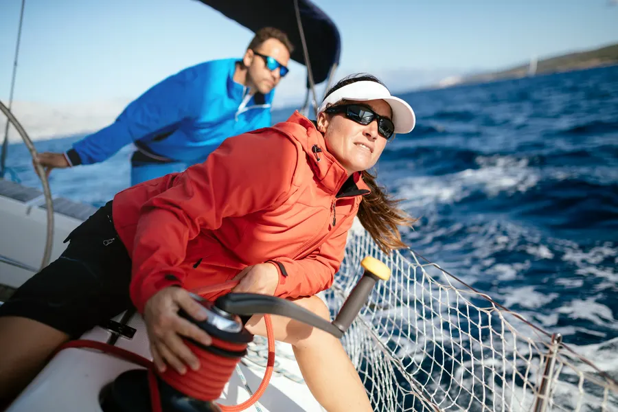

Sea activities
& sailing


Sveti Filip i Jakov is the centre of its municipality and the tourist heart of the destination — a place where rich history meets the Mediterranean way of life, set along the Pašman Channel with views to the islets and sunsets that feel like they were arranged for you.
Stroll the kilometre-long riva at dawn, take a coffee at the old market square, then disappear by boat for the afternoon. We've been practising this rhythm for a thousand years.
Half a dozen ways to spend a day in Sv. Filip i Jakov. None of them require a car — most require nothing but a swimsuit.



From a Liburnian settlement three millennia old to a Roman road, a Venetian villa and a baroque church — a place that wears its history lightly.
From the Festival of Flowers in June to fishermen's nights every Friday in August — pick a month and we'll line up your evenings.

Coastal Dalmatian cooking, grown on a thousand small farms behind the town and pulled from the channel each morning. Olive oil, lamb on a spit, fish baked under the peka bell, and the bread our grandmothers still bake on Sundays.
Gastronomy & local specialitiesFrom Babac islet (3 minutes by boat) to the saltpans of Sv. Petar (20 minutes by bike), the surrounding places are an unhurried itinerary in themselves.


Four-star hotels on the riva, family-run apartments behind the church, and three campsites under the pines. Whatever your rhythm, there's a pillow here with your name on it.
Search staysPick a frame from the bay, add a note, and share a little of Sv. Filip i Jakov with someone who isn't here yet.